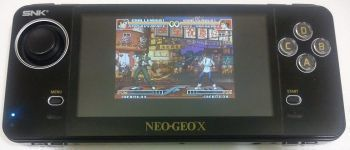
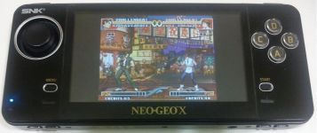

Steward
分享是一種喜悅、更是一種幸福
掌機 - Neo Geo X v370 - 安裝新版模擬器(Flash)
目前可以玩高畫質遊戲的方式大約有如下三種方式：
1. 燒錄到SD0
2. 燒錄到SD1
3. 燒錄到Flash Memory
第2種方式可以參考司徒的破解文章即可成功製作，而第3種方式，則需要等司徒有空閒時間改UBoot程式，才有機會從SD1開機，至於第1種方式就是今天司徒要教大家的方式，目前燒錄的環境還是需要用到Ubuntu系統
燒錄步驟：
1. https://drive.google.com/file/d/0BzVU0vOuWe-sMWlWSkV2cU9SX3M/edit?usp=sharing (燒錄檔案)和https://drive.google.com/file/d/0BzVU0vOuWe-saHVNYWl2REU0ME0/edit?usp=sharing (燒錄工具程式碼)
2. https://drive.google.com/file/d/0BzVU0vOuWe-sWGdhOERMNGIyaTg/edit?usp=sharing (Patch檔案)
3. 在編譯工具程式前，需要先安裝需要的安裝包
$ sudo apt-get install libusb-dev libconfuse-dev
4. 解壓縮並且編譯燒錄工具程式碼
$ cp ingenic-boot-master.zip /tmp $ cp ingenic-boot-master.diff /tmp $ unzip ingenic-boot-master.zip $ patch -p0 < ingenic-boot-master.diff $ cd ingenic-boot-master $ make
5. Neo Geo X關機
6. 按住Start按鈕並且透過MicroUSB連接到電腦
7. 執行如下命令(偵測CPU類型)
$ sudo ./ingenic-boot --probe
probe only
CPU data: JZ4770V1
8. 執行如下命令(燒錄檔案)
$ sudo ./ingenic-boot --boot hd_nxu_nand_2g.img
probe 1th
CPU data: JZ4770V1
addr set 0x80002000
addr=0x80002000
download fw_ddr2.bin
download len=6600
start1@0x80002000
choice=1, addr=0x80002000
probe 2th
CPU data: JZ4770V1
addr set 0x80002000
addr=0x80002000
download usb_boot.bin
download len=123944
flush cache
start2@0x80002000
choice=2, addr=0x80002000
probe 3th
CPU data: Boot4770
Configuring XBurst CPU succeeded.
#SD init
filename=/tmp/hd_nxu_nand_2g.img, addr=0x00000000, check=0
last_block_len 512
block_nums 3887104
last_download_block_num 1024
download_times 3796 : #########################
燒錄Flash時，可能會出現一次或多次錯誤，發生這種狀況時不用擔心，只要再度執行燒錄指令即可，使用者也不用擔心會有燒壞變磚的風險，因為君正CPU有內部Bootloader程式，正常情況是燒不壞的，燒錄高畫質模擬器的缺點就是在掌機上面無法使用全螢幕的方式玩遊戲，如下圖
正常畫面

全螢幕畫面

雖然使用Neo Geo X掌機玩遊戲時，無法達到全畫面，不過AV端子或HDMI輸出玩遊戲時，畫質會變得很好，所以，就看使用者如何取捨了，司徒等之後比較有時間時，再來好好改一下UBoot程式，希望可以從SD1開機，這樣就可以不用動到Flash了，另外，若使用者想燒回原生系統(全螢幕畫面)可以參考司徒之前寫的文章